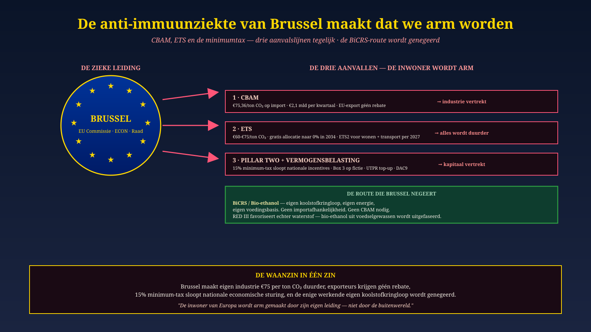

Malta · Lead Bruselas · 19 de junio de 2026
La enfermedad anti-inmune de Bruselas nos empobrece
CBAM, ETS y Pillar Two — tres ataques simultáneos. La ruta BiCRS/Etanol es ignorada.
Desde el 1 de enero de 2026: €75 por tonelada CO₂ sobre la industria europea. €2.100 millones por trimestre. Los exportadores no reciben reembolso. El impuesto mínimo del 15% desmantela la política industrial nacional. Y el único ciclo de carbono propio que funciona — BiCRS / bio-etanol — es ignorado en favor del hidrógeno importado. Tres ataques, un liderazgo, un ciudadano empobrecido.
Lea el diagnóstico de Bruselas →